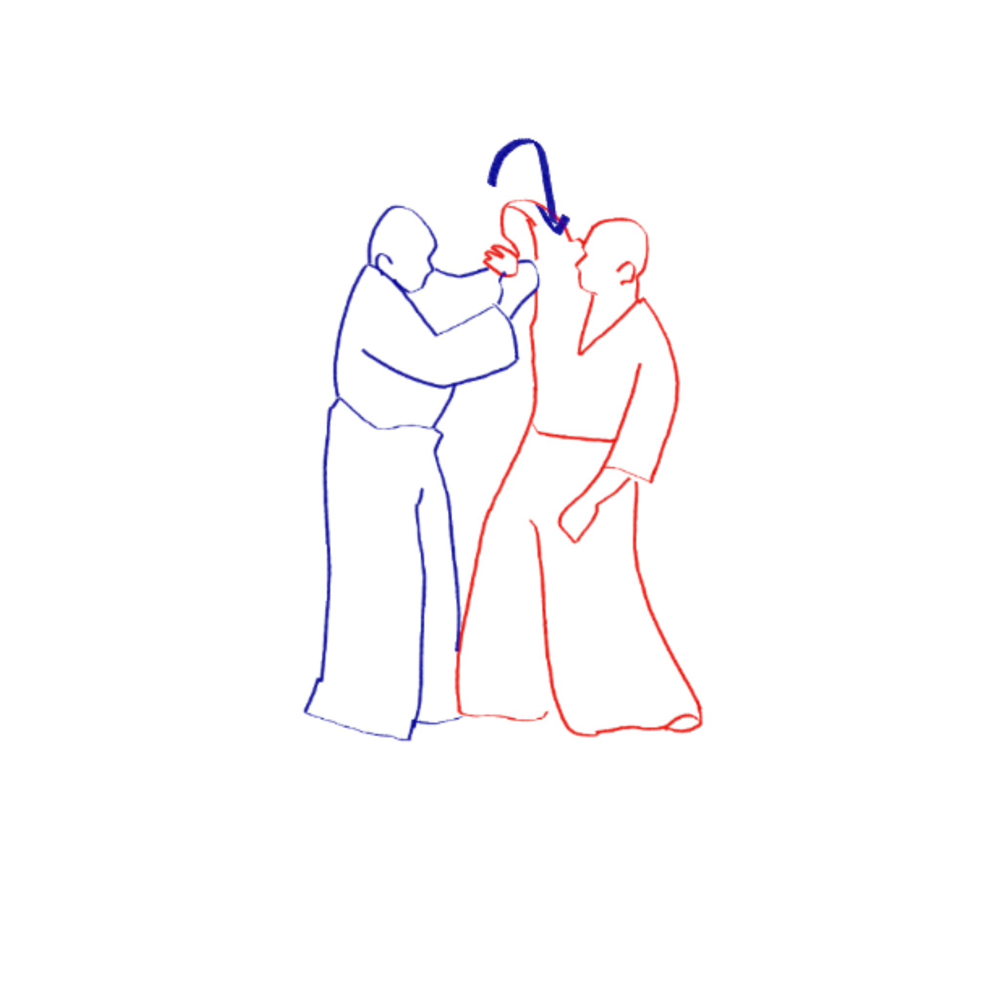
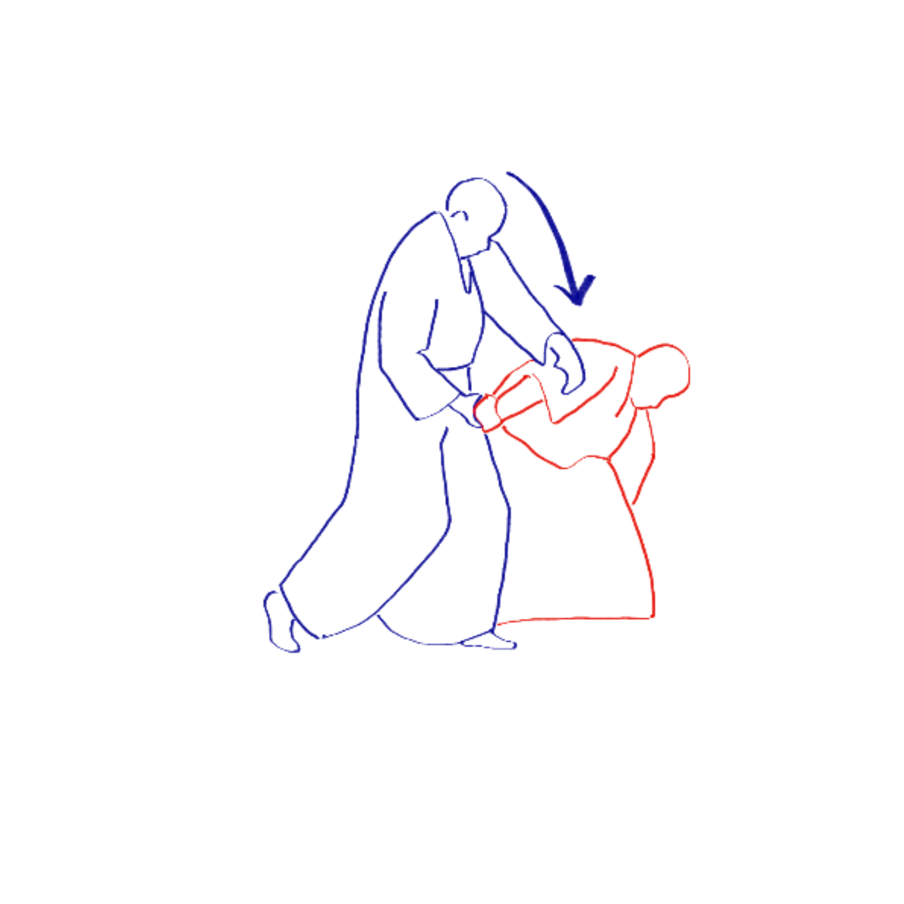
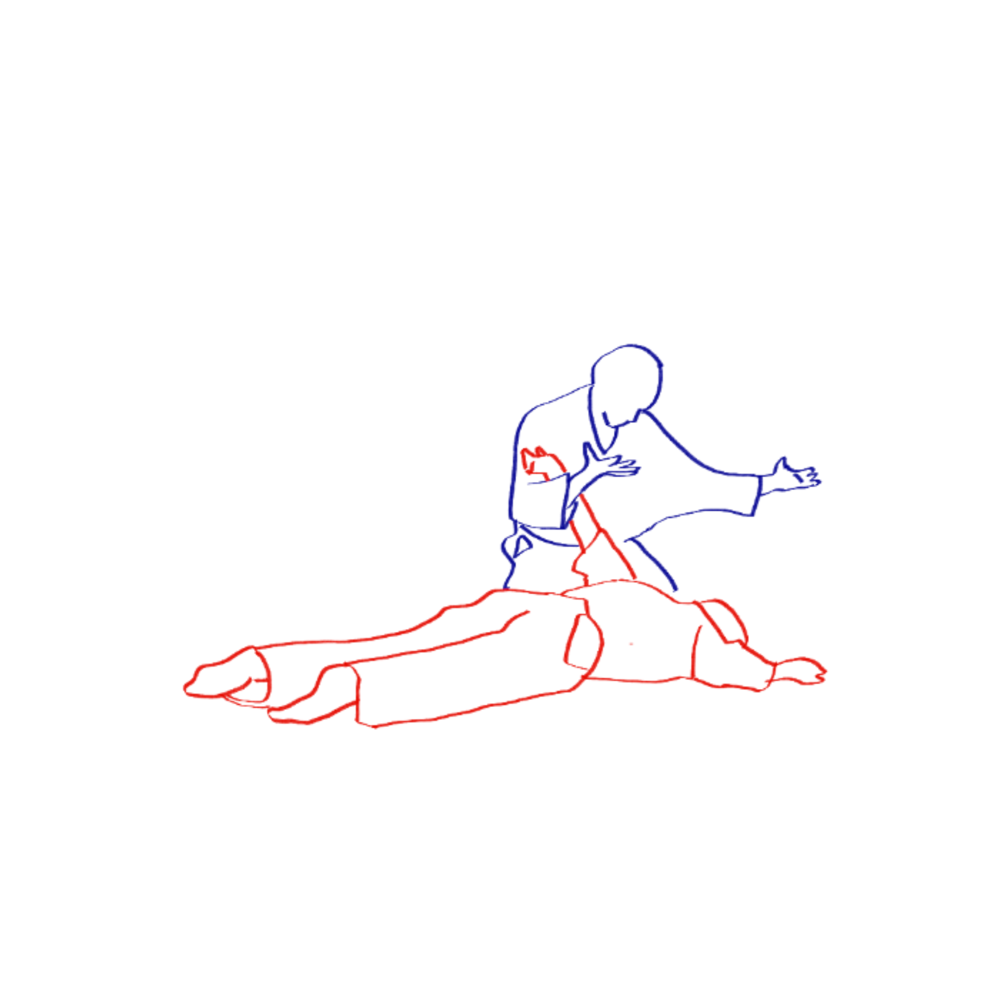
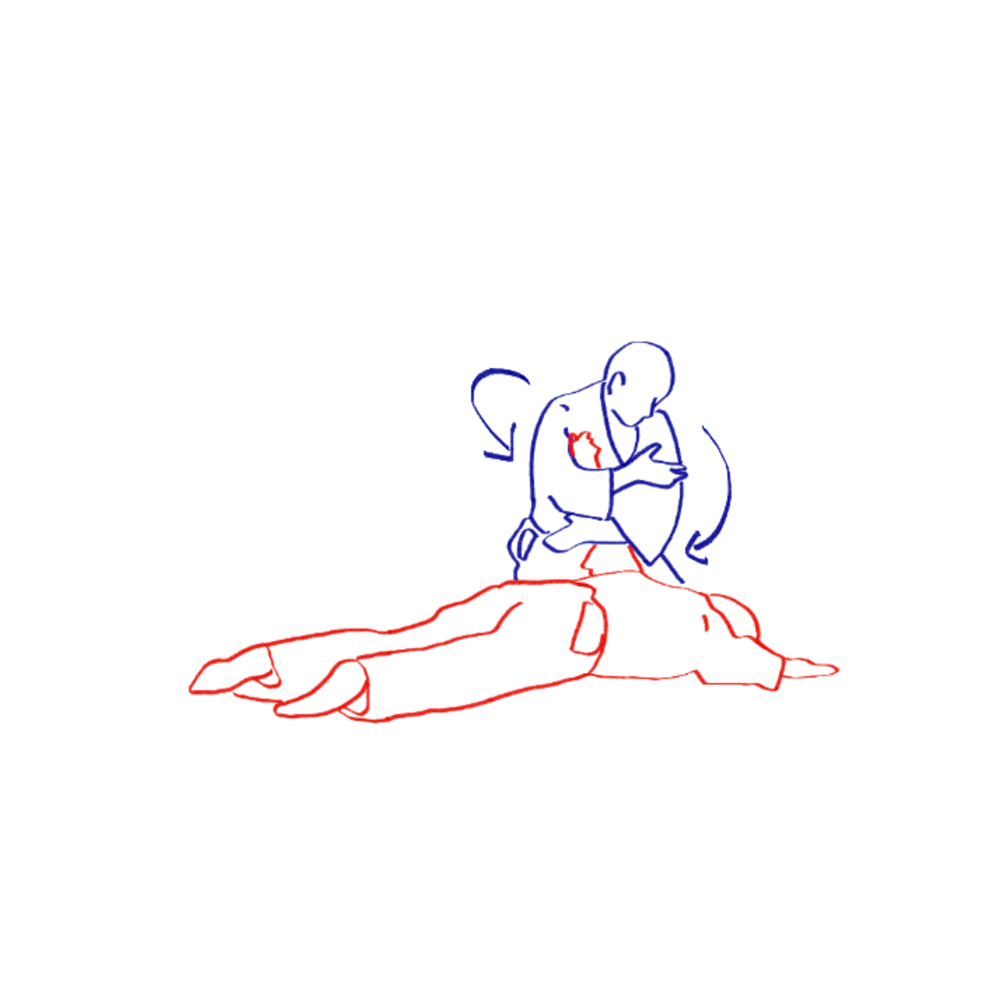

1. El uke ataca el hombro del tori y el tori echa su cuerpo hacia atrás, reteniendo la mano del uke

2. Tori sujeta muñeca del uke que realizo el ataque, elevando el codo, permitiendo que pierda el equilibrio

3. Tori empuja al uke hacia abajo, mientras mueve el brazo hacia atrás estirandolo.

4. Una vez en el piso el uke, horizontal al esté, el Tori se agacha asegurandose tener inmovilizado el brazo completo.

5. Tori se asegura la muñeca del oponente con el antebrazo.

6. El Tori con la muñeca asegurada, cruza su brazo libre en frente del cuerpo, señalizando el fin del encuentro.